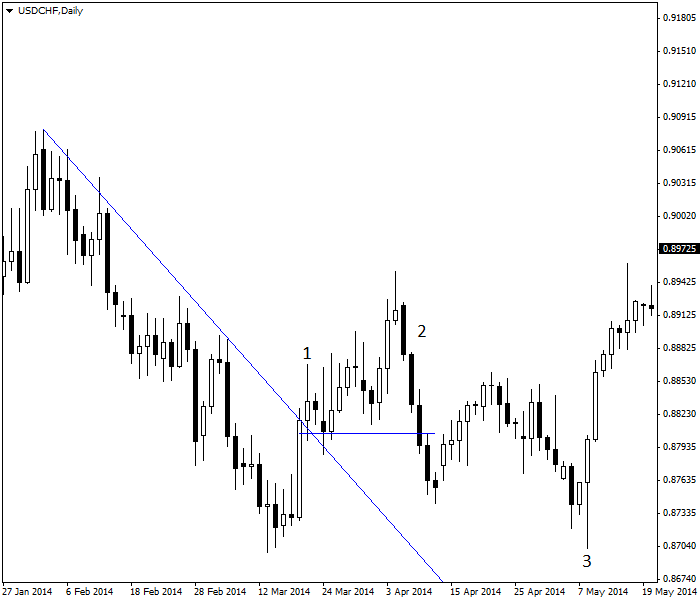
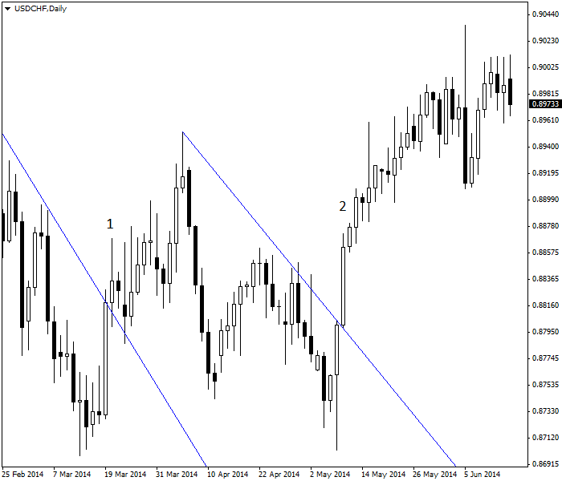
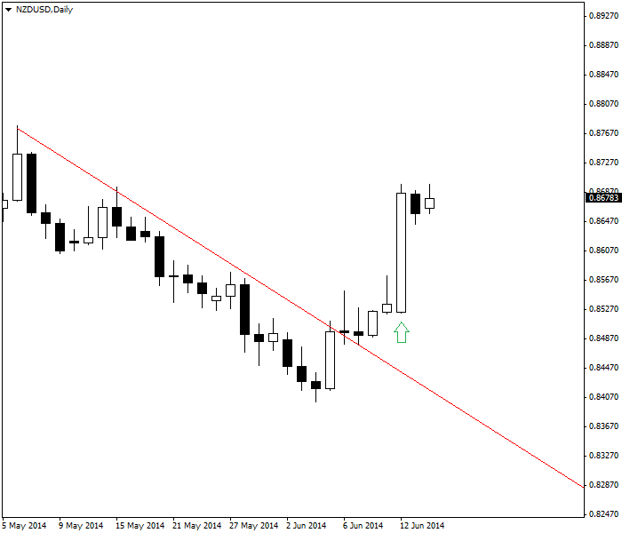
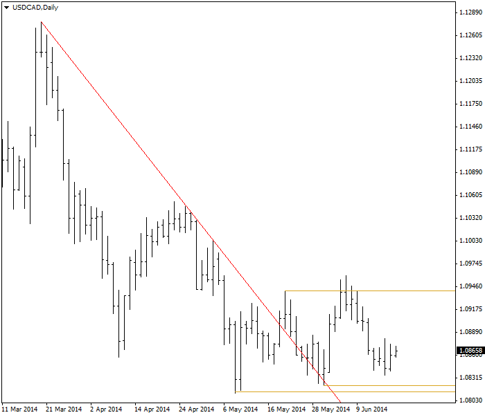

<!DOCTYPE html>
<html>
</html>
<head>
  <meta charset="utf-8">
  <meta http-equiv="X-UA-Compatible" content="IE=edge">
  <title>外汇站（fx-z.com） - 突破交易</title>
  <meta name="description" content="">
  <meta name="viewport" content="width=device-width, initial-scale=1">
  <meta name="robots" content="all,follow">
  <!-- Bootstrap CSS-->
  <link rel="stylesheet" href="vendor/bootstrap/css/bootstrap.min.css">
  <!-- Font Awesome CSS-->
  <link rel="stylesheet" href="vendor/font-awesome/css/font-awesome.min.css">
  <!-- Google fonts - Roboto-->
  <link rel="stylesheet" href="https://fonts.googleapis.com/css?family=Roboto:400,300,700,400italic">
  <!-- owl carousel-->
  <link rel="stylesheet" href="vendor/owl.carousel/assets/owl.carousel.css">
  <link rel="stylesheet" href="vendor/owl.carousel/assets/owl.theme.default.css">
  <!-- theme stylesheet-->
  <link rel="stylesheet" href="css/style.default.css" id="theme-stylesheet">
  <!-- Custom stylesheet - for your changes-->
  <link rel="stylesheet" href="css/custom.css">
  <!-- Favicon-->
  <link rel="shortcut icon" href="img/favicon.png">
  <!-- Tweaks for older IEs--><!--[if lt IE 9]>
    <script src="https://oss.maxcdn.com/html5shiv/3.7.3/html5shiv.min.js"></script>
    <script src="https://oss.maxcdn.com/respond/1.4.2/respond.min.js"></script><![endif]-->
</head>
<body>
  <div id="all">
    <div class="container-fluid">
      <div class="row row-offcanvas row-offcanvas-left"> 
        <!--   *** SIDEBAR ***-->
        <div id="sidebar" class="col-md-4 col-lg-3 sidebar-offcanvas">
          <div class="sidebar-content">
            <h1 class="sidebar-heading"> <a href="https://fx-z.com">fx-z.com</a></h1>
            <p class="sidebar-p">介绍外汇相关的基本知识，告诉您如何进行自己的技术面和基本面分析，讲解先进的交易理念，并且为您阐述失败交易者与专业交易者之间的真正区别。 </p>
            <p class="sidebar-p">通过这些课程的学习，您将学会如何根据自己的优势来应用情绪分析，还将了解真实世界的事件会对货币汇率产生什么影响，央行在外汇市场中所发挥的作用，以及交易者在颇受欢迎的即期外汇交易中有哪些选择方案。 </p>
            <ul class="sidebar-menu">
                <!-- Link-->
                <li class="sidebar-item"><a href="https://fx-z.com" class="sidebar-link">首页</a></li>
                <!-- Link-->
                <li class="sidebar-item"><a href="cihui.html" class="sidebar-link">外汇词汇</a></li>
                <!-- Link-->
                <li class="sidebar-item"><a href="ebook.html" class="sidebar-link">获取外汇电子书</a></li>
            </ul>
            <p class="social"><a href="https://www.forextimechina.com.cn/zh?form=IZIN" target="_blank"data-animate-hover="pulse" class="external facebook"><i class="fa fa-eur"></i></a><a href="https://www.forextimechina.com.cn/zh?form=IZIN" target="_blank" data-animate-hover="pulse" class="external gplus"><i class="fa fa-gbp"></i></a><a href="https://www.forextimechina.com.cn/zh?form=IZIN" target="_blank" data-animate-hover="pulse" class="external twitter"><i class="fa fa-rmb"></i></a><a href="https://www.forextimechina.com.cn/zh?form=IZIN" target="_blank" title="" class="external instagram"><i class="fa fa-dollar"></i></a><a href="https://www.forextimechina.com.cn/zh?form=IZIN" target="_blank" data-animate-hover="pulse" class="email"><i class="fa fa-money"></i></a></p>
            <div class="copyright text-center text-md-left">
             
              
            </div>
          </div>
        </div>
        <!--   *** SIDEBAR END ***  -->
        <!--   *** DETAIL ***-->
        <div class="col-md-8 col-lg-9 content-column white-background">
          <div class="small-navbar d-flex d-md-none">
            <button type="button" data-toggle="offcanvas" class="btn btn-outline-primary"> <i class="fa fa-align-left mr-2"></i>菜单</button>
            <h1 class="small-navbar-heading"> <a href="https://fx-z.com/10-7.html">下一篇 </a></h1>
          </div>
          <div class="row">
            <div class="col-xl-10">
              <div class="content-column-content">
                <h1>突破交易</h1>
    <p>
    突破是指价格走向的重大变化。突破的经典定义是指价格突破支撑线/阻力线（包括三角形、旗形和三角旗），但突破还可以被定义为更新奇的方式，例如突破布林线、ATR 或线性回归线通道以及多头吞噬蜡烛图和关键反转曲线等特殊曲线。突破通常是指与现有趋势相反的方向出现的大幅一次性走势，虽然突破有时会偷偷接近关键价位并徘徊不前，而不是强势地突破该价位。几乎所有交易者都密切地关注突破，即使长期持仓交易者也是如此。一般而言，您进入趋势交易越早，能获得的盈利就越大。
</p>
<p>
    问题在于，许多外汇突破是虚假信号——它们偃旗息鼓并且重拾突破前的走势。这并不难理解。突破出现的主要原因在于市场对货币的情绪发生改变。请查看以下示例图。突破的特征表现是一个突破上行阻力位的长蜡烛图，然后是价格陆续创下新高点。但新的市场情绪后继乏力，价格出现上行调整（到达略高于前一轮跌势 61.8% 的位置）后，货币走向逆转。当价格向下穿透突破点时，您明白突破已经失败。价格创下新低。交易者一度由上行突破所引发的积极情绪已发生变化。
</p>
<p>
     USD/CHF 突破阻力位（1），未能形成趋势（2），然后创下新低点（3）。
</p>
<p>
    请注意，市场情绪经常发生变化。当价格于数月后创下新低点，他们恢复积极的市场情绪并且准备进入下一轮上行突破。您可以在下图中查看。至此，第二次突破尚未失败。令人不可思议的是，各阻力线趋于平行。这种情况经常出现，或许反映着每种货币都具有自己的动量习惯。此处的特定货币对是 USD/CHF。另一种货币（例如 USD/CAD）的支撑线和阻力线的斜率不同。
</p>
<p>
    第一次突破（1）与第二次突破（2）
</p>
<p>
    突破通常是由重要的新闻或能够改变市场情绪的事件所引起，例如意料之外的央行加息决策。下图为 2014 年 6 月 NZD/USD 的价格图表分析师的共识是“不会加息”，但央行决策会议前五天，交易者仍在买入新西兰元。我们可以将这看作为了“以防万一”而持仓。首日，新西兰元的收盘价高于阻力线。决策公布当日，它也赚取了丰厚的盈利。这是分析师与交易者之间的经典博弈。交易者为了防止储备银行意外加息而持有多头头寸，并且获得了回报。不言而喻的是，与舆论共识相悖交易并非总是奏效，而且走势尚未完成。截至图表日期，我们仍不确定新西兰元是否会继续上涨。突破似乎较为强势并恢复了前一轮跌势的 75%，但它仍可能偃旗息鼓。积极的交易者并不在意这一点——如前一轮价格曲线所示，那些打赌加息的人正在获利了结，从而暂时阻止了上行走势。
</p>
<p>
     加息使 NZD/USD 得以成功突破（由绿色箭头标识）。
</p>
<p>
    有时，即使未发生任何新闻或者未察觉任何情绪变化，突破仍有可能出现。显然，有些市场参与者或交易群体的情绪已发生变化，但我们须等较长的时间之后才能发现这一点。也可能有些参与者试图将价格引导至某一水平，以便他们以更低的价格买入或以更高的价格卖出。当您试图让基本面与图表突破保持一致，却无法确定原因时，您必须决定是遵守基本面还是相信图表。这是一项个人决策，但大多数交易者选择根据突破交易，并且计划快速退出，以防突破偃旗息鼓。如果您一直等到突破被验证之时，您可能会遭遇亏损，因为很大一部分收益来源于突破过程中。
</p>
<p>
    验证突破是一件较为复杂的事情。有些分析师认为，如果走势变化幅度达到最低标准（例如 20%），则突破是可靠的。我们认为这项规则无效。无论走势变化幅度是 10% 还是 40%，突破都可能有效。一项正确的法则是，如果价格达到并越过前一个高点或低点，则突破是准确的。以下 USD/CAD 图表显示红色阻力线被向上突破，但之后价格未能创下更高的收盘价（最上方的金线）。它创下的新高点价高于突破曲线的收盘价，但它的收盘价未能创下新高。这通常标志着向上突破失败，但实际上，在突破后的价格创下新低点（中间的金线）之前，您尚无法确定。另一种更有效的试探突破失败与否的方法是，关注价格是否出现一个比突破前低点价（最下方的金线）还低的低点。
</p>
<p>
     USD/CAD 日线图创下新高点，但收盘价未能创下新高
</p>
<p>
    如果您不了解技术面分析，突破将对您构成妨碍，因为它们会令您大感困惑。当大量交易者获利了结时，突破容易后继乏力，然后走势将恢复之前的走势。突破与回落相伴而行，因此您需要同时掌握这两种理念。
</p>
<p>
    <br/>
</p>
<p>
    <br/>
</p>
              </div>
            </div>
          </div>
        </div>
      </div>
    </div>
  </div>
  <!-- JavaScript files-->
  <script src="vendor/jquery/jquery.min.js"></script>
  <script src="vendor/popper.js/umd/popper.min.js"> </script>
  <script src="vendor/bootstrap/js/bootstrap.min.js"></script>
  <script src="vendor/jquery.cookie/jquery.cookie.js"> </script>
  <script src="vendor/owl.carousel/owl.carousel.min.js"></script>
  <script src="vendor/masonry-layout/masonry.pkgd.min.js"></script>
  <script src="js/front.js"></script>
</body>